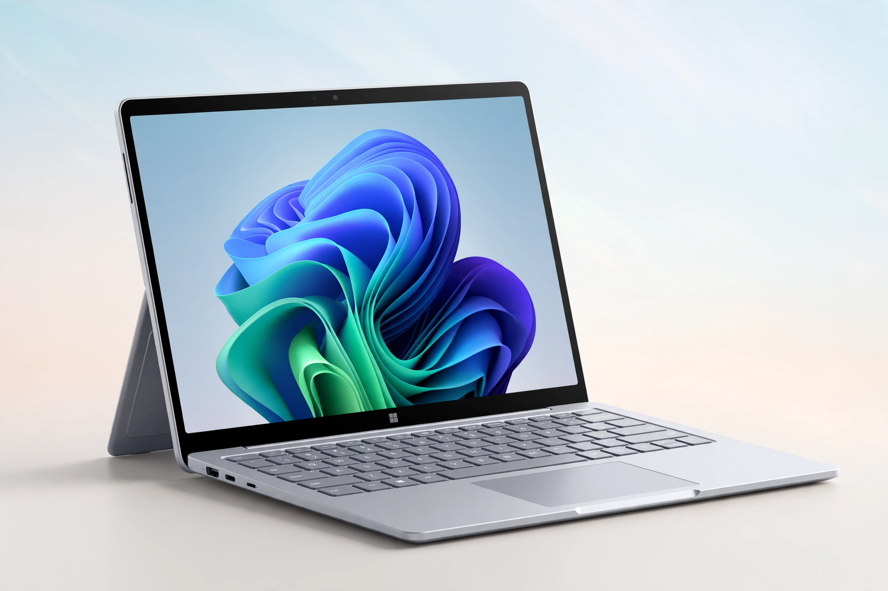

[Image: Surface-style laptop with colourful Windows wallpaper]
For home
- Microsoft 365 — Word, Excel, PowerPoint, Outlook and OneDrive by subscription, now fronted by the Copilot AI assistant
- Windows — the latest Windows 11 and Copilot+ PCs dominate the hero rotation
- Surface — Surface Pro and Surface Laptop devices
- Xbox and PC gaming — Game Pass promoted heavily in seasonal slots
For business
Azure cloud services, Microsoft 365 for business, Teams, Dynamics 365 and security offerings occupy the business half of the page, with enterprise case stories.
Copilot everywhere
Since 2023 Microsoft's marketing has centred on Copilot — AI assistance woven into Windows, Microsoft 365, Edge and Bing — and the homepage's calls to action reflect that, as recalled.